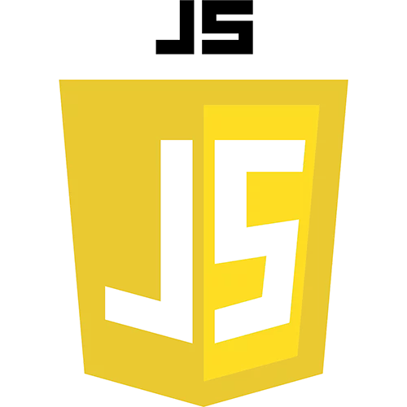

¿Qué es HTML?
Es un lenguaje que se utiliza para la creación de paginas en la WWW
¿Qué es CSS?
Es un lenguaje de diseño grafico para definir y creart la presentación de documento estructurado escrito en un lenguaje de marcado.
¿Qué es Java Script?
Es un lenguaje de programacion que se puede utilizar para construccion de sitios Web y para hacerlos mas interactivos.
Licenciatura en Sistemas Computacionales
© Copyright 2022. Mauricio Daniel Lecciur Pérez